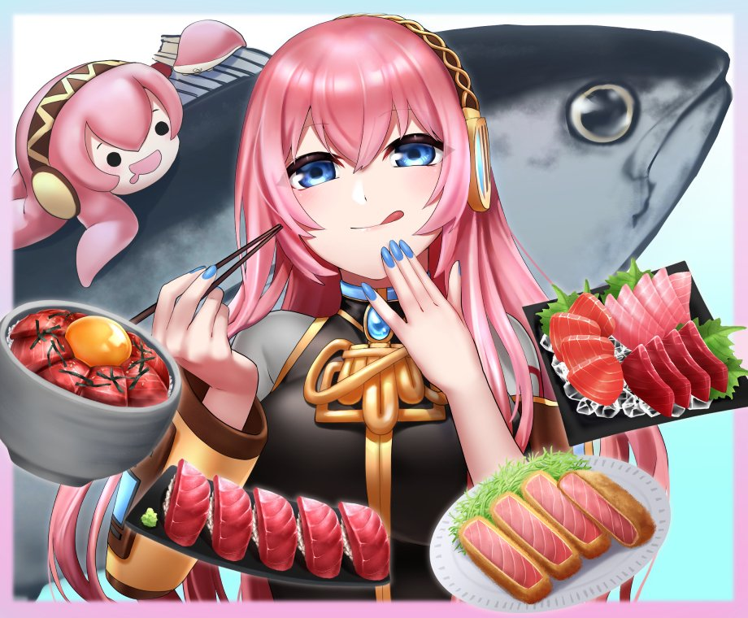
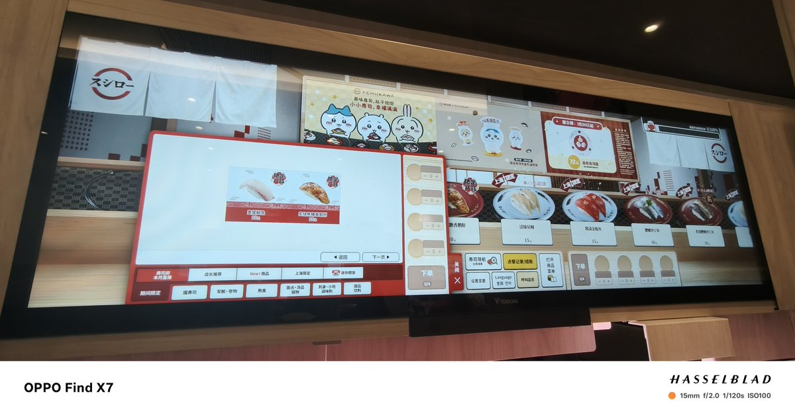
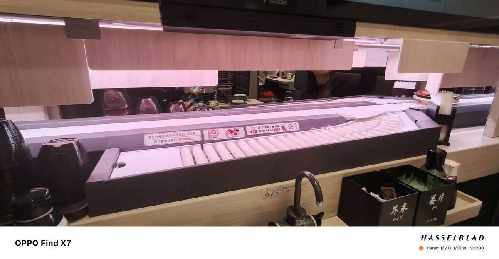
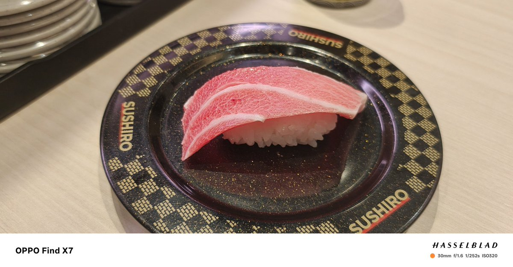
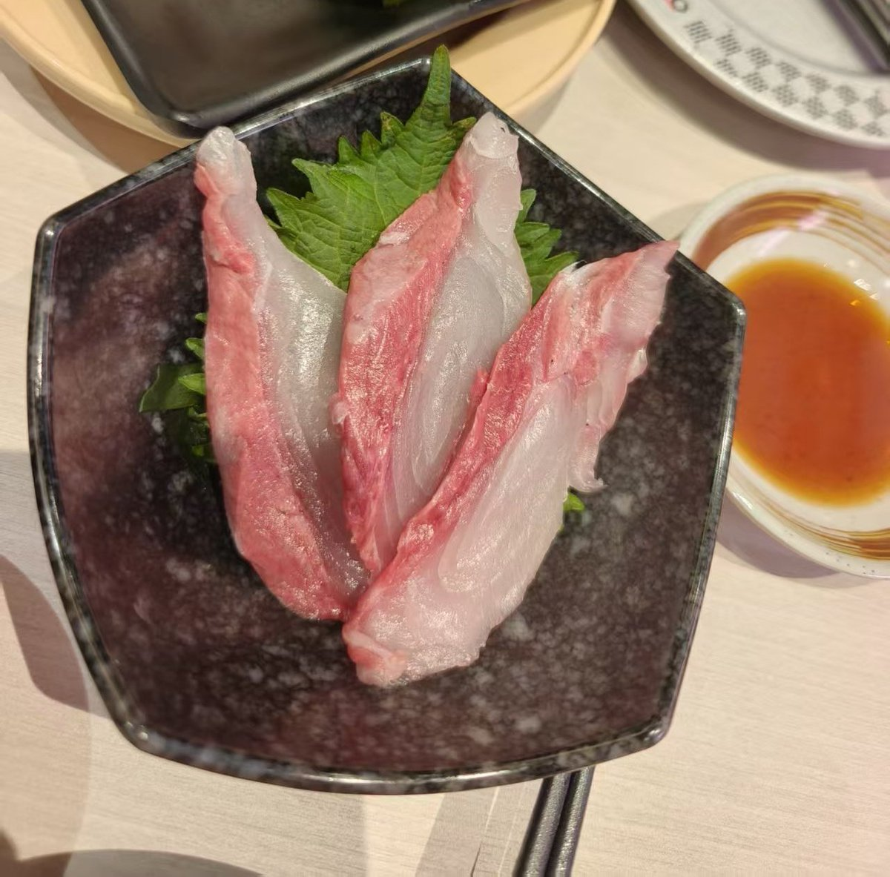

随便多说点吧……金枪鱼通常情况下按照脂肪的多少，主要（也有其他的，但不常见）分为三个部分，分别是大拖罗（大腹），中拖罗（中腹）和赤身，越靠前脂肪含量越高，因此大拖罗通常指那种入口即化的极品部位，一般在鱼腹的最前端，而赤身则是瘦肉的那种扎实感，中拖罗则会折中一点






这次吃了一回寿司郎……排队的时间都是比较长的，排了大概有两个多小时，不过不用一直坐着等，可以出去逛逛，线上就能看到，但最好还是多提前点要号，这个智能点餐还是挺好玩的，还有抽奖游戏……下面两张图是金枪鱼中腹和𫚕鱼，用料还是很扎实的，口感很不错 https://t.co/UqG6GcKmRA